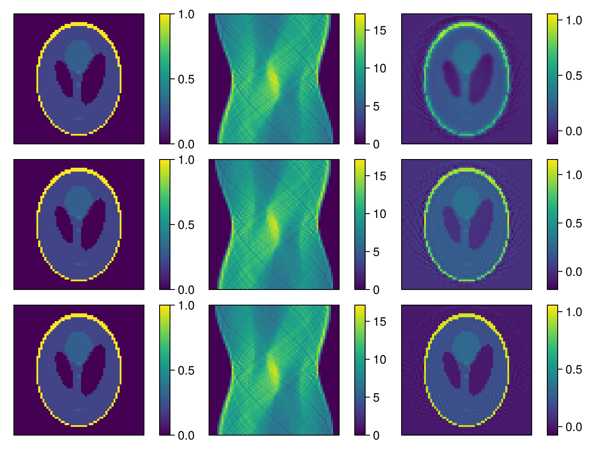

Parameter Sweeps
When developing or optimizing reconstruction algorithms, it's often useful to systematically explore how different parameter values affect the reconstruction result. Parameter sweeps allow you to iterate over a RecoPlan template, generating multiple configurations for systematic exploration. This is particularly useful for:
- Hyperparameter tuning (e.g., iterations, regularization strength)
- Algorithm comparison (e.g., different solvers)
- Grid search optimization
This How-To builds on the reconstruction examples and shows how to use PlanSweep and related utilities.
Basic Single-Field Sweep
A PlanSweep iterates over values for a specific field of a RecoPlan. Let's create a template plan and sweep over the number of iterations:
First, create a base reconstruction plan:
pre = RecoPlan(RadonPreprocessingParameters; frames = collect(1:1))
reco = RecoPlan(IterativeRadonReconstructionParameters;
eltype = eltype(sinograms),
angles = angles,
shape = size(images)[1:3],
iterations = 10,
reg = [L2Regularization(0.001)],
solver = CGNR)
params = RecoPlan(IterativeRadonParameters; pre = pre, reco = reco)
plan_template = RecoPlan(IterativeRadonAlgorithm; parameter = params)RecoPlan{Main.OurRadonReco.IterativeRadonAlgorithm}
└─ parameter::RecoPlan{Main.OurRadonReco.IterativeRadonParameters}
├─ reco::RecoPlan{Main.OurRadonReco.IterativeRadonReconstructionParameters}
│ ├─ iterations = 10
│ ├─ solver = CGNR
│ ├─ reg = L2Regularization{Float64}[L2Regularization{Float64}(0.001)]
│ ├─ eltype = Float64
│ ├─ angles = [0.0, 0.01232, 0.0246399, 0.0369599, 0.0492799, 0.0615999, 0.0739198, 0.0862398, 0.0985598, 0.11088 … 3.03071, 3.04303, 3.05535, 3.06767, 3.07999, 3.09231, 3.10463, 3.11695, 3.12927, 3.14159]
│ └─ shape = (64, 64, 64)
└─ pre::RecoPlan{Main.OurRadonReco.RadonPreprocessingParameters}
├─ numAverages
└─ frames = [1]
Now create a sweep over the iterations field:
sweep = PlanSweep(plan_template.parameter.reco, :iterations, [1, 2, 3])PlanSweep(RecoPlan{Main.OurRadonReco.IterativeRadonAlgorithm}, field=iterations, nvalues=3)
values = [1, 2, 3]The sweep has a length equal to the number of values:
length(sweep)3You can iterate over the sweep to get plans with different parameter values:
results_iterations = []
for plan in sweep
algo = build(plan)
img = reconstruct(algo, sinograms)
push!(results_iterations, img)
endEach iteration produces a complete RecoPlan with the field value set:
sweep[3].parameter.reco.iterations3Using the @plan_sweep Macro
The @plan_sweep macro provides a more convenient syntax using assignment notation:
sweep_macro = @plan_sweep(plan_template.parameter.reco.iterations = [1, 5, 10, 20])PlanSweep(RecoPlan{Main.OurRadonReco.IterativeRadonAlgorithm}, field=iterations, nvalues=4)
values = [1, 5, 10, 20]Note: The macro requires the base plan to be a variable. It parses the left-hand side to determine the parent plan and field name.
Grid Search with Iterators.product
When you want to explore combinations of multiple parameters, use Iterators.product to create a Cartesian product of sweeps:
sweep_iterations = @plan_sweep(plan_template.parameter.reco.iterations = [5, 10, 20])
sweep_solver = @plan_sweep(plan_template.parameter.reco.solver = [CGNR, Kaczmarz])
grid = Iterators.product(sweep_iterations, sweep_solver)ProdSweep(2 sweeps, total_combinations=6)
[1] PlanSweep(RecoPlan{Main.OurRadonReco.IterativeRadonAlgorithm}, field=iterations, nvalues=3)
[2] PlanSweep(RecoPlan{Main.OurRadonReco.IterativeRadonAlgorithm}, field=solver, nvalues=2)
The grid has length equal to the product of individual sweep lengths:
length(grid)6Iterate over all combinations:
parameters = []
for (i, plan) in enumerate(grid)
push!(parameters, grid(i))
end
parameters6-element Vector{Any}:
(:iterations => 5, :solver => RegularizedLeastSquares.CGNR)
(:iterations => 10, :solver => RegularizedLeastSquares.CGNR)
(:iterations => 20, :solver => RegularizedLeastSquares.CGNR)
(:iterations => 5, :solver => RegularizedLeastSquares.Kaczmarz)
(:iterations => 10, :solver => RegularizedLeastSquares.Kaczmarz)
(:iterations => 20, :solver => RegularizedLeastSquares.Kaczmarz)This gives us 3 × 2 = 6 combinations: (5, CGNR), (10, CGNR), (20, CGNR), (5, Kaczmarz), (10, Kaczmarz), (20, Kaczmarz)
Zipped Sweeps with Iterators.zip
For sweeps that should iterate in parallel (same index), use Iterators.zip:
iterations_list = [5, 10, 20]
reg_values = [L2Regularization(0.0001), L2Regularization(0.001), L2Regularization(0.01)]
sweep_iter = @plan_sweep(plan_template.parameter.reco.iterations = iterations_list)
sweep_reg = @plan_sweep(plan_template.parameter.reco.reg = [[r] for r in reg_values])
zipped = Iterators.zip(sweep_iter, sweep_reg)ZipSweep(2 sweeps, length=3)
[1] PlanSweep(RecoPlan{Main.OurRadonReco.IterativeRadonAlgorithm}, field=iterations, nvalues=3)
[2] PlanSweep(RecoPlan{Main.OurRadonReco.IterativeRadonAlgorithm}, field=reg, nvalues=3)
The zipped sweep has length equal to the length of the shortest input:
length(zipped)3Each iteration yields a plan with both parameters set:
parameters = []
for (i, plan) in enumerate(grid)
push!(parameters, grid(i))
end
parameters6-element Vector{Any}:
(:iterations => 5, :solver => RegularizedLeastSquares.CGNR)
(:iterations => 10, :solver => RegularizedLeastSquares.CGNR)
(:iterations => 20, :solver => RegularizedLeastSquares.CGNR)
(:iterations => 5, :solver => RegularizedLeastSquares.Kaczmarz)
(:iterations => 10, :solver => RegularizedLeastSquares.Kaczmarz)
(:iterations => 20, :solver => RegularizedLeastSquares.Kaczmarz)Multi-Threading
Sweeps can also be combined with multi-threading and caching:
results = [similar(images, 0, 0, 0, 0) for i = 1:length(zipped)]
Threads.@threads for i = 1:length(zipped)
reco = reconstruct(build(zipped[i]), sinograms)
results[i] = reco
endNote that we did not directly loop over the sweep, since @threads expects an abstract vector and not an iterator. With the getindex we can generate the appropriate sweep plan variant.
fig = Figure()
for i = 1:length(zipped)
plot_image(fig[i,1], reverse(images[:, :, 24, 1]))
plot_image(fig[i,2], sinograms[:, :, 24, 1])
plot_image(fig[i,3], reverse(results[i][:, :, 24, 1]))
end
resize_to_layout!(fig)
fig
Limitations
- All sweeps in a product or zip must share the same root plan
- Duplicate sweeps targeting the same field will throw an error
- Zipped sweeps must have the same length
This page was generated using Literate.jl.